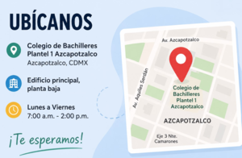

Estamos cerca de ti
Nuestro proyecto está dirigido principalmente a la comunidad estudiantil interesada en conocer más sobre la nomofobia y sus efectos. Participamos en actividades escolares, campañas informativas y eventos relacionados con la salud digital para promover un uso responsable de la tecnología.
También compartimos información a través de medios digitales para que cualquier persona pueda acceder a nuestros recursos desde cualquier lugar. Nuestro objetivo es llegar a más jóvenes y familias mediante contenido educativo y recomendaciones prácticas.
Si deseas conocer más sobre nuestras actividades, talleres o campañas, puedes comunicarte con nosotros mediante la sección de contacto o seguir nuestras redes sociales para mantenerte informado sobre próximos eventos.